library(tidyverse)
library(lubridate)
library(ggpubr)
#library(grid)
#library(ggplotify)
#library(ggord)
library(fitdistrplus)
library(MASS)
library(car)
library(KScorrect)
library(EnvStats)
select <- dplyr::select
summarise <- dplyr::summarise
#fonts for figures
#library(extrafont)
#font_import()Minimum size limits and the reproductive value of numerous, young, mature female fish
1 Load packages
#A. DATA INPUT ##1. Data: Sampled adults used for parentage analysis
samp <- read.csv("Adults_used_for_parentage_in_each_period.csv", header = T)
samp.1 = samp %>% filter(! is.na(TL)) %>%
distinct(ID, .keep_all = T) %>% #remove duplicate IDs
mutate(TL = TL / 10) #Convert to 'cm'
samp.TL = samp.1[,9:10]
#number of NYMFFs sampled
samp.NYM = samp.TL %>% filter(TL>=25 & TL<=38)
#above MSL fish sampled
samp.MSL = samp.TL %>% filter(TL>38)
#average size at sample
samp.1 %>% summarise(mean = mean(TL), se = sd(TL)/ sqrt(n())) mean se
1 49.5594 0.3521813summary(samp.1$TL) Min. 1st Qu. Median Mean 3rd Qu. Max.
29.00 41.77 47.85 49.56 55.00 78.10 #location (reef) of samples
parent.loc <- samp.1 %>% dplyr::select(ID, REEF) %>% rename(Parent = ID)##2. Data: Parentage assignments
parent_size.raw = read.csv("Total_parent_offspring_assignments.csv", header=TRUE)
##Step-wise size re-calculation from assigned parent's sampling FL (mm) to spawning TL (cm)
parent_size = parent_size.raw %>%
#Calculating parent's sample TL (cm) from sample FL (mm), using equation from Harrison et al. 2012 and Williamson et al. 2016
mutate(Parent_sample_TL_cm = ((Parent_sample_FL_mm*0.1)-0.24069)/0.9375) %>%
#Calculating parent's sample SL (cm) from sample FL (mm), using Equation 1, from Ferreira & Russ (1992)
mutate(SL_cm_sampling_parent = -0.4236+0.8565*Parent_sample_FL_mm*0.1) %>%
#Calculating parent's age from sample SL (cm), using Equation 2, from Ferreira & Russ (1992)
mutate(Parent_sampling_age = (log(-SL_cm_sampling_parent/60+1)/-0.206)-0.945) %>%
#converting parent sample / juvenile spawning date to DMY format (lubridate)
mutate(sample_date = dmy(Parent_sample_date),
spawn_date = dmy(Juvenile_spawn_date)) %>%
#calculating the difference in time from parent sampling to juvenile spawning, in years
mutate(Date_diff_years = (sample_date-spawn_date)/365) %>%
#calculating parent's age at spawning, by adding/subtracting time difference from parent's sampling age
mutate(Parent_spawning_age = as.numeric(Parent_sampling_age - Date_diff_years)) %>%
#calculating parent's SL (cm) at time of spawning from spawning age, using Equation 3, from Ferreira & Russ (1992)
mutate(Parent_spawning_SL_cm = (60*(1-exp(-0.206*(Parent_spawning_age+0.945))))) %>%
#converting parent's SL (cm) at time of spawning to FL (cm) at time of spawning, using the inverse of Equation 1 from Ferreira & Russ (1992)
mutate(Parent_spawning_FL_cm = (Parent_spawning_SL_cm+0.4236)/0.8565) %>%
#converting parent's FL (cm) at time of spawning to TL (cm) at time of spawning, using equation Eq. 4 from Harrison et al. 2012 and Williamson et al. 2016
mutate(Parent_spawning_TL_cm = (Parent_spawning_FL_cm-0.24069)/0.9375) %>%
#getting rid of 11 NAs, 3 non-computable values
drop_na(Parent_spawning_TL_cm) %>%
filter(Parent_spawning_TL_cm>25) %>%
left_join(parent.loc, by = "Parent")Warning: There was 1 warning in `mutate()`.
ℹ In argument: `Parent_sampling_age = (log(-SL_cm_sampling_parent/60 +
1)/-0.206) - 0.945`.
Caused by warning in `log()`:
! NaNs producedparent_size %>% group_by(REEF, Sample_group) %>% summarise(n = n()) %>% spread(key = Sample_group, value = n)`summarise()` has grouped output by 'REEF'. You can override using the
`.groups` argument.# A tibble: 4 × 3
# Groups: REEF [4]
REEF C D
<chr> <int> <int>
1 Clam Bay 18 20
2 Egg Rock 15 20
3 Halfway Green 12 9
4 Middle Is 9 8parent_size %>% summarise(mean = mean(Parent_spawning_TL_cm), se = sd(Parent_spawning_TL_cm)/ sqrt(n())) mean se
1 52.01623 1.18707summary(parent_size$Parent_spawning_TL_cm) Min. 1st Qu. Median Mean 3rd Qu. Max.
25.13 43.46 54.28 52.02 61.08 74.75 # number of NYMFFs assigned to offspring
parent_size %>% filter(Parent_spawning_TL_cm <= 38) P_maculatus Offspring Parent Sample_group Parent_sample_date
1 2 Plec06_B02 Plec21_D07 C 11/05/2012
2 11 Plec07_C01 Plec04_D01 C 03/03/2009
3 21 Plec08_D03 Plec04_B01 C 28/02/2009
4 25 Plec08_E03 Plec04_F03 C 03/03/2009
5 26 Plec08_E07 Plec04_A10 C 28/02/2009
6 30 Plec08_H01 Plec28_C06 C 20/05/2012
7 32 Plec09_B02 Plec04_E05 C 03/03/2009
8 36 Plec09_D12 Plec21_B07 C 10/05/2012
9 37 Plec09_E04 Plec24_B07 C 26/05/2012
10 42 Plec10_A10 Plec23_D07 C 21/05/2012
11 61 Plec11_F05 Plec05_F05 C 27/01/2008
12 99 Plec45_A03 Plec54_A02 D 05/08/2013
13 102 Plec45_B01 Plec24_E09 D 28/05/2012
14 105 Plec45_D07 Plec46_A05 D 28/05/2012
Parent_sample_FL_mm Juvenile_spawn_date Parent_sample_TL_cm
1 529.7600 30/07/2008 56.25100
2 386.3566 30/10/2007 40.95463
3 338.5554 22/01/2008 35.85584
4 386.3566 20/01/2008 40.95463
5 338.5554 27/12/2007 35.85584
6 520.1998 21/03/2008 55.23124
7 338.5554 28/08/2008 35.85584
8 481.9589 25/11/2008 51.15221
9 481.9589 10/12/2008 51.15221
10 481.9589 20/12/2008 51.15221
11 313.0000 02/05/2008 33.12993
12 386.3566 16/03/2012 40.95463
13 386.3566 22/10/2011 40.95463
14 315.0000 29/10/2011 33.34326
SL_cm_sampling_parent Parent_sampling_age sample_date spawn_date
1 44.95034 5.768541 2012-05-11 2008-07-30
2 32.66784 2.871896 2009-03-03 2007-10-30
3 28.57367 2.194313 2009-02-28 2008-01-22
4 32.66784 2.871896 2009-03-03 2008-01-20
5 28.57367 2.194313 2009-02-28 2007-12-27
6 44.13151 5.511356 2012-05-20 2008-03-21
7 28.57367 2.194313 2009-03-03 2008-08-28
8 40.85618 4.600459 2012-05-10 2008-11-25
9 40.85618 4.600459 2012-05-26 2008-12-10
10 40.85618 4.600459 2012-05-21 2008-12-20
11 26.38485 1.867465 2008-01-27 2008-05-02
12 32.66784 2.871896 2013-08-05 2012-03-16
13 32.66784 2.871896 2012-05-28 2011-10-22
14 26.55615 1.892265 2012-05-28 2011-10-29
Date_diff_years Parent_spawning_age Parent_spawning_SL_cm
1 3.7835616 days 1.984979 27.18884
2 1.3424658 days 1.529431 23.96063
3 1.1041096 days 1.090203 20.54769
4 1.1178082 days 1.754088 25.59051
5 1.1753425 days 1.018971 19.96450
6 4.1671233 days 1.344233 22.55914
7 0.5123288 days 1.681984 25.07560
8 3.4575342 days 1.142925 20.97385
9 3.4602740 days 1.140185 20.95181
10 3.4191781 days 1.181281 21.28099
11 -0.2630137 days 2.130478 28.15769
12 1.3890411 days 1.482855 23.61319
13 0.6000000 days 2.271896 29.07194
14 0.5808219 days 1.311443 22.30539
Parent_spawning_FL_cm Parent_spawning_TL_cm REEF
1 32.23869 34.13120 Clam Bay
2 28.46962 30.11086 Clam Bay
3 24.48487 25.86045 Clam Bay
4 30.37257 32.14068 Clam Bay
5 23.80397 25.13416 Clam Bay
6 26.83332 28.36547 Clam Bay
7 29.77139 31.49942 Clam Bay
8 24.98242 26.39118 Halfway Green
9 24.95670 26.36375 Halfway Green
10 25.34103 26.77370 Clam Bay
11 33.36986 35.33778 Clam Bay
12 28.06397 29.67816 Egg Rock
13 34.43729 36.47637 Clam Bay
14 26.53705 28.04945 Clam Bay##3. Data: Surveyed population (UVC) ##a. size distribution
gki.abundance = read.csv(file = "Great_Keppel_Island_Coral_Trout_Abundance_data.csv")
#focal NTMRs
ntmr = gki.abundance %>% dplyr::select(- FORK.LENGTH) %>%
uncount(ABUNDANCE) %>% filter(YEAR %in% seq(2007,2013,1), ZONE == "NTR", SITE %in% c("GK5", "GK6", "M1", "M2", "M3", "M4", "H1", "H2"))
#Green zones (NTMRs)
green = gki.abundance %>% dplyr::select(- FORK.LENGTH) %>%
uncount(ABUNDANCE) %>% filter(YEAR %in% seq(2007,2013,1), ZONE == "NTR")
#for fit.distribution.gamma
final_survey = green %>% filter(TOTAL.LENGTH >= 25) %>% pull(TOTAL.LENGTH)
source("fit.distribution.gamma.R")
green.zones <- fit.distribution.gamma(green %>% pull(TOTAL.LENGTH), boot = 99, range = seq(0,80, by = 0.1))Warning: The `x` argument of `as_tibble.matrix()` must have unique column names if
`.name_repair` is omitted as of tibble 2.0.0.
ℹ Using compatibility `.name_repair`.ntmr.zones <- fit.distribution.gamma(ntmr %>% pull(TOTAL.LENGTH), boot = 99, range = seq(0,80, by = 0.1))
#Blue zones (fished)
blue = gki.abundance %>% dplyr::select(- FORK.LENGTH) %>%
uncount(ABUNDANCE) %>% filter(YEAR %in% seq(2007,2013,1), ZONE == "FISHED")
blue.zones <- fit.distribution.gamma(blue %>% pull(TOTAL.LENGTH), boot = 99, range = seq(0,80, by = 0.1))##b. Defining NYMFFs
1.1 For the purpose of this study we explicitly define NYFFs as fish 25 cm-38 cm TL (below MSL), of coral trout observed in unfished populations (NTMRs) in the Keppel Islands between 2007 and 2013.
1.2 number of NYMFF vs number of above-MSL from UVC
ntmr.NYMF = ntmr %>% filter(TOTAL.LENGTH >= 25 & TOTAL.LENGTH <= 38) #369
ntmr.BOF = ntmr %>% filter(TOTAL.LENGTH > 38) # 474 individuals above MSL
369/(369+474)[1] 0.4377224474/(369+474)[1] 0.5622776#100 indiv. less < 25 cm TL##C. Density and biomass
gki.density = gki.abundance %>%
filter(YEAR %in% seq(2007,2013,1)) %>%
group_by(REGION, YEAR, REEF, SITE, ZONE) %>%
summarise(total.fish = sum(ABUNDANCE) / 1500 *10000) %>% #divide by 5 for the average per transect; (divide by 1500 for per square metre reef, optional); divide by 1500 * 10000 for ha; transect are 50m * 6m belt transects
group_by(REGION, YEAR, REEF, SITE, ZONE) %>%
summarise(mean = mean(total.fish, na.rm = T),
se = sd(total.fish, na.rm = T)/sqrt(n())) %>%
mutate(variable = "density")`summarise()` has grouped output by 'REGION', 'YEAR', 'REEF', 'SITE'. You can
override using the `.groups` argument.
`summarise()` has grouped output by 'REGION', 'YEAR', 'REEF', 'SITE'. You can
override using the `.groups` argument.gki.biomass <- gki.abundance %>%
filter(YEAR %in% seq(2007,2013,1)) %>%
mutate(biomass = (0.0118 * FORK.LENGTH^3.06) * ABUNDANCE) %>%
group_by(REGION, YEAR, REEF, SITE, ZONE, N.TRANSECT) %>%
summarise(total.biomass = sum(biomass) / 1500 *10000 / 1000) %>%
group_by(REGION, YEAR, REEF, SITE, ZONE) %>%
summarise(mean = mean(total.biomass, na.rm = T) ,
se = sd(total.biomass, na.rm = T)/ sqrt(n()) ) %>%
mutate(variable = "biomass")`summarise()` has grouped output by 'REGION', 'YEAR', 'REEF', 'SITE', 'ZONE'.
You can override using the `.groups` argument.
`summarise()` has grouped output by 'REGION', 'YEAR', 'REEF', 'SITE'. You can
override using the `.groups` argument.plot.density = ggplot(gki.density, aes(x = ZONE, y = mean, fill = ZONE) ) +
geom_boxplot() +
scale_fill_manual(values = c("skyblue", "lightgreen")) +
labs(y = expression(Density ~ (individuals.ha^{-2}~.ya^{-1})), x = "") +
theme_classic() +
theme(legend.position = "none")
plot.biomass = ggplot(gki.biomass, aes(x = ZONE, y = mean, fill = ZONE) ) +
geom_boxplot() +
scale_fill_manual(values = c("skyblue", "lightgreen")) +
labs(y = expression(Biomass ~ (kg.ha^{-2}~.ya^{-1})), x = "") +
theme_classic() +
theme(legend.position = "none")
ggarrange(plot.density, plot.biomass)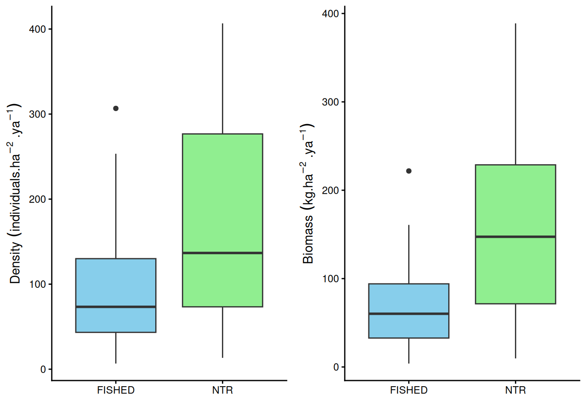
t.test(mean ~ ZONE, data = gki.biomass )
Welch Two Sample t-test
data: mean by ZONE
t = -5.0745, df = 55.888, p-value = 4.601e-06
alternative hypothesis: true difference in means between group FISHED and group NTR is not equal to 0
95 percent confidence interval:
-122.46628 -53.14023
sample estimates:
mean in group FISHED mean in group NTR
65.76166 153.56491 t.test(mean ~ ZONE, data = gki.density )
Welch Two Sample t-test
data: mean by ZONE
t = -3.6027, df = 64.55, p-value = 0.0006128
alternative hypothesis: true difference in means between group FISHED and group NTR is not equal to 0
95 percent confidence interval:
-119.47058 -34.24665
sample estimates:
mean in group FISHED mean in group NTR
94.72868 171.58730 1.3 The alternative hypothesis is that the density and biomass of coral trout in blue zones is less than in green zones.
#B. FIT DISTRIBUTIONS ##Testing to determine distribution of assigned, sampled and surveyed data, Gamma, Weibull, lnorm, normal
final_sample = samp.1$TL
final_assign = parent_size$Parent_spawning_TL_cm
final_survey = green %>% filter(TOTAL.LENGTH >= 25) %>% pull(TOTAL.LENGTH)
#gamma
fit_g = fitdist(final_assign, "gamma")
fit_gs = fitdist(final_sample, "gamma")
fit_gsu = fitdist(final_survey, "gamma")
#weibull
fit_w = fitdist(final_assign, "weibull")
fit_ws = fitdist(final_sample, "weibull")
fit_wsu = fitdist(final_survey, "weibull")
#lognorm
fit_ln = fitdist(final_assign, "lnorm")
fit_lns = fitdist(final_sample, "lnorm")
fit_lnu = fitdist(final_survey, "lnorm")
#normal dist
fit_norm = fitdist(final_assign, "norm")
fit_norms = fitdist(final_sample, "norm")
fit_normsu = fitdist(final_survey, "norm")
#dens plot results, assign
par(mfrow=c(2,2))
plot.legend <- c("Weibull", "lognormal", "gamma", "Norm")
denscomp(list(fit_w, fit_g, fit_ln, fit_norm), legendtext = plot.legend)
cdfcomp (list(fit_w, fit_g, fit_ln, fit_norm), legendtext = plot.legend)
qqcomp (list(fit_w, fit_g, fit_ln, fit_norm), legendtext = plot.legend)
ppcomp (list(fit_w, fit_g, fit_ln, fit_norm), legendtext = plot.legend)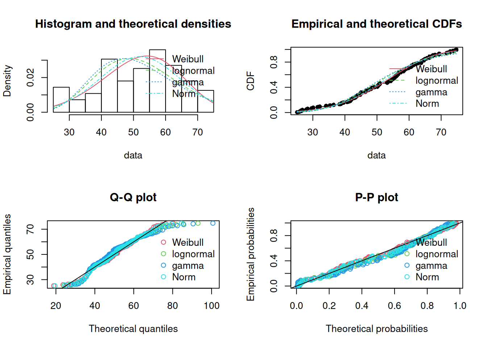
par(mfrow=c(1,1))
#dens plot results, sample
par(mfrow=c(2,2))
plot.legend <- c("Weibull", "lognormal", "gamma", "Norm")
denscomp(list(fit_ws, fit_gs, fit_lns, fit_norms), legendtext = plot.legend)
cdfcomp (list(fit_ws, fit_gs, fit_lns, fit_norms), legendtext = plot.legend)
qqcomp (list(fit_ws, fit_gs, fit_lns, fit_norms), legendtext = plot.legend)
ppcomp (list(fit_ws, fit_gs, fit_lns, fit_norms), legendtext = plot.legend)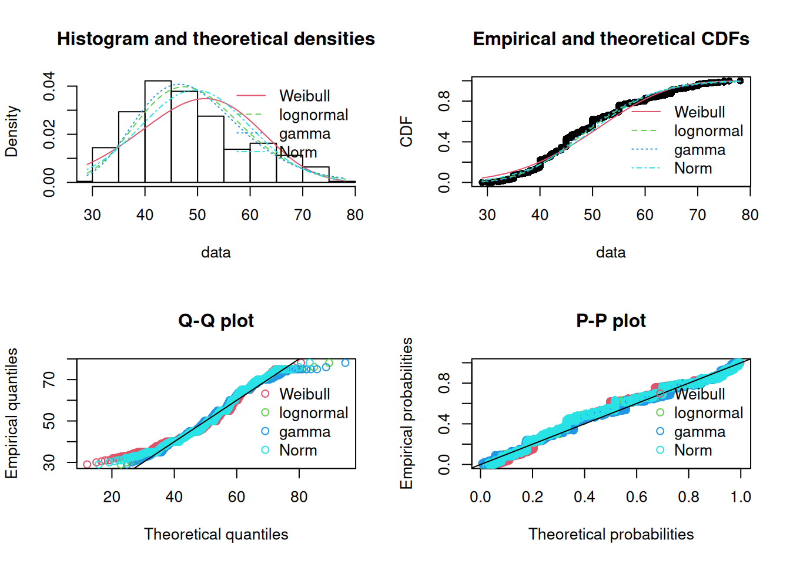
par(mfrow=c(1,1))
#dens plot results, survey
par(mfrow=c(2,2))
plot.legend <- c("Weibull", "lognormal", "gamma", "Norm")
denscomp(list(fit_wsu, fit_gsu, fit_lnu, fit_normsu), legendtext = plot.legend)
cdfcomp (list(fit_wsu, fit_gsu, fit_lnu, fit_normsu), legendtext = plot.legend)
qqcomp (list(fit_wsu, fit_gsu, fit_lnu, fit_normsu), legendtext = plot.legend)
ppcomp (list(fit_wsu, fit_gsu, fit_lnu, fit_normsu), legendtext = plot.legend)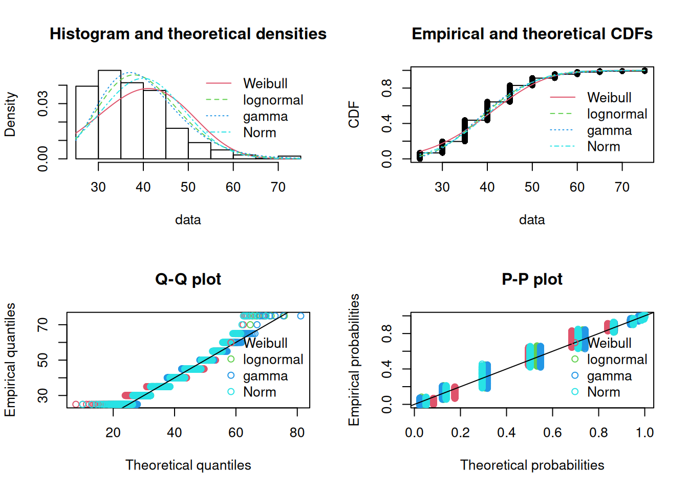
par(mfrow=c(1,1))1.4 GoF
#cullen-frey graphs
descdist(final_assign, discrete=FALSE, boot=999)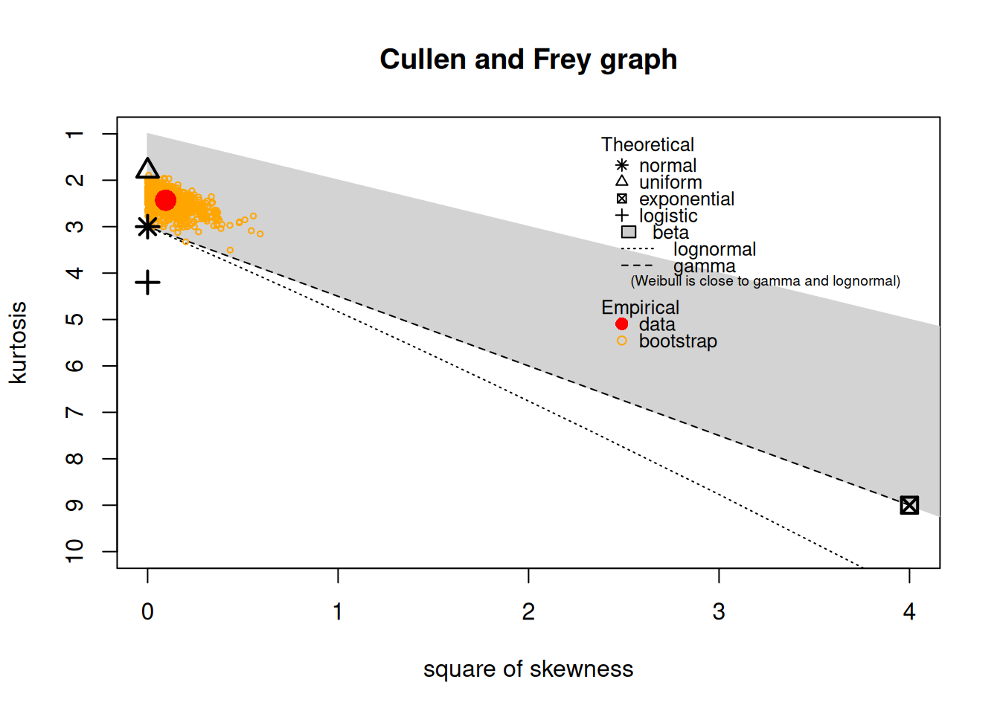
summary statistics
------
min: 25.13416 max: 74.75047
median: 54.28199
mean: 52.01623
estimated sd: 12.50656
estimated skewness: -0.3079307
estimated kurtosis: 2.431511 descdist(final_sample, discrete=FALSE, boot=999)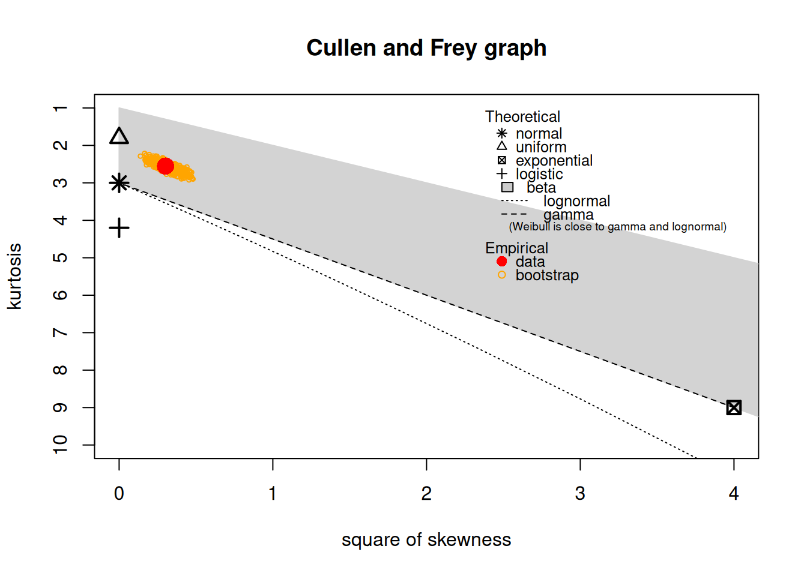
summary statistics
------
min: 29 max: 78.1
median: 47.85
mean: 49.5594
estimated sd: 10.39979
estimated skewness: 0.5495241
estimated kurtosis: 2.553092 descdist(final_survey, discrete=FALSE, boot=999)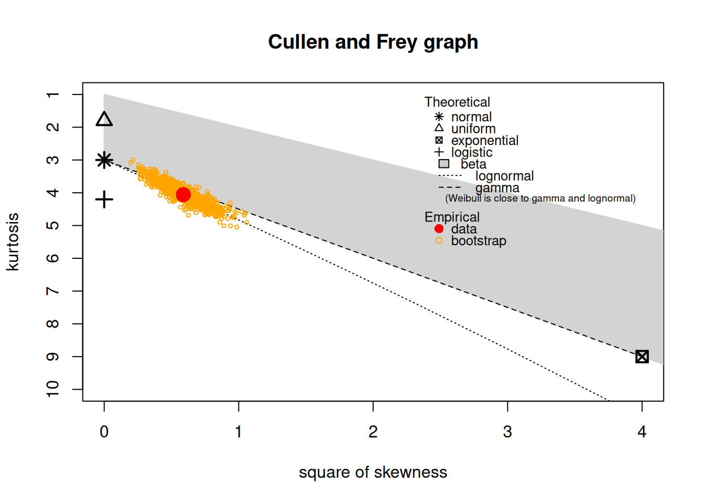
summary statistics
------
min: 25 max: 75
median: 40
mean: 39.93704
estimated sd: 9.129451
estimated skewness: 0.7667203
estimated kurtosis: 4.057796 #GOF
gofstat(list(fit_g,fit_w,fit_ln, fit_norm))Goodness-of-fit statistics
1-mle-gamma 2-mle-weibull 3-mle-lnorm 4-mle-norm
Kolmogorov-Smirnov statistic 0.1045561 0.05487865 0.1161641 0.07670817
Cramer-von Mises statistic 0.2002282 0.04908793 0.2925477 0.08356458
Anderson-Darling statistic 1.4162176 0.38164422 2.0415899 0.60482656
Goodness-of-fit criteria
1-mle-gamma 2-mle-weibull 3-mle-lnorm 4-mle-norm
Akaike's Information Criterion 887.223 874.8883 894.4605 878.8280
Bayesian Information Criterion 892.642 880.3074 899.8796 884.2471gofstat(list(fit_gs,fit_ws,fit_lns, fit_norms))Goodness-of-fit statistics
1-mle-gamma 2-mle-weibull 3-mle-lnorm 4-mle-norm
Kolmogorov-Smirnov statistic 0.08452659 0.122803 0.07462747 0.1046532
Cramer-von Mises statistic 0.99021155 2.567614 0.70566255 1.8649261
Anderson-Darling statistic 6.07626978 15.633106 4.47003674 11.2342275
Goodness-of-fit criteria
1-mle-gamma 2-mle-weibull 3-mle-lnorm 4-mle-norm
Akaike's Information Criterion 6506.728 6623.567 6493.291 6561.702
Bayesian Information Criterion 6516.270 6633.109 6502.833 6571.244gofstat(list(fit_wsu, fit_gsu, fit_lnu, fit_normsu))Goodness-of-fit statistics
1-mle-weibull 2-mle-gamma 3-mle-lnorm 4-mle-norm
Kolmogorov-Smirnov statistic 0.1482097 0.1298382 0.1207537 0.1433345
Cramer-von Mises statistic 3.9341221 2.6147527 2.5954233 3.1404259
Anderson-Darling statistic 23.1983207 14.1082626 14.0898131 17.3949718
Goodness-of-fit criteria
1-mle-weibull 2-mle-gamma 3-mle-lnorm 4-mle-norm
Akaike's Information Criterion 7010.511 6849.305 6836.602 6922.626
Bayesian Information Criterion 7020.230 6859.024 6846.321 6932.345gofTest(final_assign, test = "proucl.ks.gamma", distribution = "gamma")$distribution
[1] "Gamma"
$dist.abb
[1] "gamma"
$distribution.parameters
shape scale
15.491482 3.357731
$n.param.est
[1] 2
$estimation.method
[1] "MLE"
$statistic
D
0.104576
$sample.size
[1] 111
$parameters
n
111
$crit.vals
D.0.01 D.0.05 D.0.10
0.101 0.086 0.079
$p.value
[1] "< 0.01"
$alternative
[1] "True cdf does not equal the\n Gamma Distribution."
$method
[1] "ProUCL Kolmogorov-Smirnov Gamma GOF"
$data
[1] 67.27691 34.13120 44.00804 48.27401 41.26721 46.70354 42.36070 30.11086
[9] 53.32181 55.97854 42.02968 64.76385 40.72151 41.65723 47.50820 48.43608
[17] 69.35693 25.86045 58.36713 55.90554 43.56587 32.14068 25.13416 55.05517
[25] 39.56401 28.36547 43.34517 31.49942 61.42790 48.10650 73.68859 26.39118
[33] 26.36375 44.83618 53.14025 26.77370 68.10569 50.11321 54.54413 67.39068
[41] 50.70613 50.54039 56.57694 60.66145 63.74639 46.33781 44.89776 39.00261
[49] 54.80825 50.91519 56.74544 41.81591 35.33778 46.48189 50.20546 47.32501
[57] 64.56048 66.40035 60.76790 38.35251 59.27342 66.41338 63.84887 72.84290
[65] 43.81508 42.83209 74.75047 44.76803 65.56685 62.06945 56.26847 61.33487
[73] 50.30320 55.26019 66.34532 58.37754 38.81531 45.10728 56.27980 41.86181
[81] 60.81599 53.52513 74.30155 55.56163 29.67816 71.72826 56.57739 36.47637
[89] 43.25693 58.16423 28.04945 54.28199 64.57238 65.15074 57.32783 55.50672
[97] 59.86530 49.19200 60.14931 72.77836 69.38729 57.48234 58.38332 54.38285
[105] 62.66461 63.96333 63.74473 58.91574 44.96311 50.92457 72.11841
$data.name
[1] "final_assign"
$bad.obs
[1] 0
attr(,"class")
[1] "gof"gofTest(final_sample, test = "proucl.ks.gamma", distribution = "gamma")Warning in ks.test.default(x, "pgamma", shape = shape, scale = scale): ties
should not be present for the one-sample Kolmogorov-Smirnov test$distribution
[1] "Gamma"
$dist.abb
[1] "gamma"
$distribution.parameters
shape scale
23.531264 2.106109
$n.param.est
[1] 2
$estimation.method
[1] "MLE"
$statistic
D
0.08459704
$sample.size
[1] 872
$parameters
n
872
$crit.vals
D.0.01 D.0.05 D.0.10
0.037 0.032 0.029
$p.value
[1] "< 0.01"
$alternative
[1] "True cdf does not equal the\n Gamma Distribution."
$method
[1] "ProUCL Kolmogorov-Smirnov Gamma GOF"
$data
[1] 29.0000 31.0000 30.5000 31.0000 31.0000 32.0000 32.4000 32.1000 32.9000
[10] 33.0000 32.9000 33.0000 32.5000 33.0000 33.0000 33.3000 33.6000 34.0000
[19] 33.8000 33.5000 34.2000 35.0000 34.5000 34.5125 34.5000 34.7000 35.0000
[28] 35.0000 35.5000 35.0000 34.9000 35.4000 36.0000 35.9000 35.5000 36.6000
[37] 36.6000 36.1000 37.2000 36.5000 37.5000 37.0000 37.5000 37.4000 37.5000
[46] 37.8000 38.1000 37.2000 38.2000 37.8000 38.0000 38.0000 38.0000 37.9000
[55] 38.5000 38.5000 39.0000 39.1000 39.8000 38.7000 38.0000 39.0000 39.0000
[64] 39.6000 39.1000 39.0000 39.5000 39.5000 39.6000 39.3000 39.1000 39.0000
[73] 39.0000 39.2000 39.2000 39.5000 40.1000 39.6000 39.5000 39.2000 41.0000
[82] 39.8000 41.0000 40.4000 40.1000 41.1000 40.8000 41.9000 41.2000 40.9000
[91] 41.0000 41.0000 41.5000 41.0000 41.0000 41.0000 41.0000 41.5000 42.0000
[100] 41.9000 42.8000 41.0000 41.7000 41.7000 41.5000 41.7000 43.0000 42.4000
[109] 42.0000 42.2000 40.2000 42.1000 42.7000 41.8000 42.5000 42.0000 42.2000
[118] 42.0000 42.5000 42.5000 42.8000 42.3000 42.8000 43.1000 43.1000 43.0000
[127] 42.1000 43.0000 43.3000 43.0000 44.0000 43.7000 43.9000 43.6000 43.4000
[136] 43.8000 44.5000 45.0000 45.0000 44.0000 44.0000 44.2000 44.6000 44.8000
[145] 43.2000 44.7000 45.0000 44.5000 45.4000 45.5000 44.5000 44.0000 45.0000
[154] 45.1000 45.4000 45.5000 46.1000 46.0000 46.0000 46.4000 47.1000 46.0000
[163] 46.0000 47.1000 46.5000 47.0000 47.2000 46.5000 47.0000 47.0000 47.5000
[172] 47.0000 47.2000 46.0000 47.7000 47.7000 47.7000 47.4000 48.6000 48.5000
[181] 48.4000 49.0000 48.0000 49.0000 48.5000 49.1000 48.7000 49.1000 49.5000
[190] 49.5000 49.0000 48.5000 49.0000 49.0000 50.0000 49.5000 50.0000 50.0000
[199] 51.0000 50.0000 49.5000 50.0000 50.0000 51.1000 49.6000 51.0000 51.8000
[208] 51.0000 50.6000 51.2000 51.6000 51.2000 51.2000 53.6000 51.5000 52.0000
[217] 50.0000 52.0000 52.5000 52.0000 52.0000 53.0000 52.9000 53.0000 52.9000
[226] 53.0000 52.0000 52.6000 52.9000 53.0000 53.5000 54.0000 54.8000 54.0000
[235] 53.6000 53.0000 54.0000 52.5000 54.1000 52.6000 54.2000 54.2000 55.0000
[244] 53.7000 53.7000 54.0000 53.6000 54.1000 54.5000 54.5000 54.0000 55.0000
[253] 55.5000 56.5000 55.1000 54.0000 54.0000 54.5000 56.0000 55.9000 55.6000
[262] 55.2000 55.0000 56.0000 54.8000 56.2000 56.1000 56.9000 57.0000 56.0000
[271] 57.8000 57.0000 57.0000 58.1000 58.2000 58.6000 58.5000 59.0000 58.9000
[280] 59.3000 59.0000 59.8000 60.0000 59.0000 59.2000 60.4000 61.0000 60.9000
[289] 60.6000 64.0000 61.0000 62.0000 62.0000 60.5000 61.3000 61.1000 61.3000
[298] 62.0000 62.7000 61.8000 62.5000 63.0000 62.5000 62.6000 62.6000 62.2000
[307] 63.0000 62.5000 63.7000 61.6000 64.0000 63.3821 63.8000 64.1000 63.5000
[316] 63.8000 64.3000 63.6000 64.2000 64.0000 64.0000 64.0000 63.9000 64.8000
[325] 65.4000 65.0000 65.5000 65.1000 65.6000 66.1000 66.6000 66.6000 66.0000
[334] 67.0000 66.0000 66.5000 67.0000 67.0000 66.0000 67.7000 67.5000 66.0000
[343] 67.8000 68.0000 68.0000 69.3000 68.1000 69.0000 68.0000 69.0000 69.0000
[352] 69.2000 69.4000 69.1000 69.1000 70.0000 70.5000 70.0000 69.5000 70.5000
[361] 71.5000 70.5000 70.3000 72.0000 71.0000 72.0000 72.3000 72.5000 73.0000
[370] 73.5000 71.0000 71.3000 74.0000 72.0000 74.0000 75.0000 76.0000 74.0000
[379] 78.1000 55.0000 55.0000 55.0000 50.0000 55.0000 50.0000 55.0000 56.0000
[388] 65.0000 70.0000 75.0000 55.0000 60.0000 60.0000 50.0000 55.0000 50.0000
[397] 55.0000 50.0000 50.0000 55.0000 50.0000 50.0000 70.0000 70.0000 60.0000
[406] 65.0000 55.0000 65.0000 60.0000 50.0000 65.0000 55.0000 50.0000 75.0000
[415] 50.0000 55.0000 65.0000 70.0000 55.0000 60.0000 65.0000 60.0000 55.0000
[424] 65.0000 55.0000 70.0000 55.0000 55.0000 65.0000 55.0000 60.0000 60.0000
[433] 65.0000 75.0000 52.0000 70.0000 65.0000 55.0000 50.0000 50.0000 52.0000
[442] 75.0000 50.0000 65.0000 58.0000 65.0000 68.0000 50.0000 55.0000 50.0000
[451] 75.0000 65.0000 55.0000 55.0000 68.0000 70.0000 60.0000 60.0000 55.0000
[460] 55.0000 54.0000 50.0000 55.0000 60.0000 60.0000 55.0000 50.0000 52.0000
[469] 65.0000 50.0000 65.0000 50.0000 50.0000 50.0000 50.0000 55.0000 75.0000
[478] 55.0000 50.0000 50.0000 52.0000 53.0000 50.0000 50.0000 50.0000 55.0000
[487] 60.0000 65.0000 56.0000 50.0000 75.0000 56.0000 55.0000 65.0000 58.0000
[496] 68.0000 50.0000 54.0000 70.0000 60.0000 55.0000 65.0000 55.0000 50.0000
[505] 65.0000 60.0000 50.0000 55.0000 55.0000 55.0000 70.0000 55.0000 55.0000
[514] 55.0000 65.0000 55.0000 60.0000 50.0000 55.0000 55.0000 65.0000 50.0000
[523] 57.0000 65.0000 55.0000 70.0000 65.0000 60.0000 65.0000 52.0000 50.0000
[532] 55.0000 55.0000 50.0000 50.0000 50.0000 60.0000 60.0000 55.0000 52.0000
[541] 50.0000 52.0000 55.0000 50.0000 50.0000 50.0000 50.0000 55.0000 55.0000
[550] 50.0000 55.0000 52.0000 65.0000 50.0000 58.0000 65.0000 50.0000 70.0000
[559] 70.0000 55.0000 75.0000 55.0000 55.0000 57.0000 61.0000 50.0000 55.0000
[568] 65.0000 75.0000 70.0000 50.0000 50.0000 50.0000 65.0000 50.0000 65.0000
[577] 50.0000 60.0000 60.0000 50.0000 55.0000 34.4000 49.7000 42.0000 50.0000
[586] 35.0000 45.0000 40.0000 35.0000 40.0000 40.0000 40.0000 35.0000 45.0000
[595] 40.0000 35.0000 35.0000 40.0000 35.0000 40.0000 40.0000 40.0000 45.0000
[604] 35.0000 65.0000 35.0000 50.0000 40.0000 45.0000 35.0000 35.0000 60.0000
[613] 50.0000 40.0000 45.0000 35.0000 35.0000 50.0000 45.0000 40.0000 35.0000
[622] 40.0000 40.0000 45.0000 40.0000 35.0000 35.0000 40.0000 40.0000 40.0000
[631] 40.0000 35.0000 40.0000 35.0000 35.0000 45.0000 40.0000 50.0000 35.0000
[640] 35.0000 35.0000 55.0000 35.0000 35.0000 40.0000 40.0000 56.6000 38.0000
[649] 44.0000 41.2000 40.0000 45.0000 35.0000 40.0000 35.0000 40.0000 40.0000
[658] 40.0000 40.0000 40.0000 40.0000 45.0000 35.0000 60.0000 51.8000 43.8000
[667] 49.6000 32.0000 32.5000 33.1000 33.5000 34.1000 34.5000 35.5000 36.6000
[676] 36.5000 36.5000 37.0000 38.2000 39.7000 40.2000 42.1000 42.5000 42.5000
[685] 43.1000 45.0000 44.0000 45.2000 45.2000 45.1000 45.5000 45.5000 43.9000
[694] 46.2000 46.6000 47.5000 46.6000 49.6000 49.3000 48.0000 48.0000 48.5000
[703] 49.1000 49.7000 49.8000 45.0000 45.0000 42.0000 46.0000 44.0000 45.0000
[712] 45.0000 40.0000 40.0000 45.0000 45.0000 45.0000 40.0000 45.0000 42.0000
[721] 40.0000 45.0000 45.0000 45.0000 45.0000 45.0000 45.0000 45.0000 45.0000
[730] 46.0000 44.0000 40.0000 48.0000 45.0000 45.0000 40.0000 45.0000 48.0000
[739] 46.0000 44.0000 40.0000 45.0000 46.0000 40.0000 40.0000 43.0000 42.0000
[748] 42.0000 43.0000 45.0000 44.0000 40.0000 42.0000 45.0000 43.0000 40.0000
[757] 47.0000 47.0000 42.0000 45.0000 45.0000 45.0000 48.0000 38.0000 46.0000
[766] 44.0000 45.0000 45.0000 48.0000 45.0000 43.0000 45.0000 45.0000 42.0000
[775] 42.0000 44.0000 48.0000 48.0000 42.0000 42.0000 45.0000 44.0000 44.0000
[784] 48.0000 46.0000 48.0000 47.0000 47.0000 45.0000 40.0000 45.0000 40.0000
[793] 45.0000 38.0000 45.0000 40.0000 45.0000 40.0000 44.0000 38.0000 38.0000
[802] 43.0000 30.0000 45.0000 47.0000 46.0000 44.0000 46.0000 40.0000 42.0000
[811] 48.0000 42.0000 44.0000 46.0000 44.0000 48.0000 45.0000 46.0000 40.0000
[820] 40.0000 48.0000 45.0000 45.0000 45.0000 45.0000 46.0000 44.0000 42.0000
[829] 44.0000 40.0000 42.0000 40.0000 40.0000 40.0000 40.0000 40.0000 46.0000
[838] 45.0000 46.0000 47.0000 44.0000 45.0000 40.0000 38.0000 46.0000 38.0000
[847] 45.0000 46.0000 46.0000 40.0000 45.0000 42.0000 48.0000 44.0000 46.0000
[856] 44.0000 40.0000 40.0000 45.0000 45.0000 35.0000 45.0000 45.0000 45.0000
[865] 40.0000 40.0000 40.0000 45.0000 45.0000 40.0000 40.0000 45.0000
$data.name
[1] "final_sample"
$bad.obs
[1] 0
attr(,"class")
[1] "gof"gofTest(final_survey, test = "proucl.ks.gamma", distribution = "gamma")Warning in ks.test.default(x, "pgamma", shape = shape, scale = scale): ties
should not be present for the one-sample Kolmogorov-Smirnov test$distribution
[1] "Gamma"
$dist.abb
[1] "gamma"
$distribution.parameters
shape scale
20.002065 1.996646
$n.param.est
[1] 2
$estimation.method
[1] "MLE"
$statistic
D
0.1297474
$sample.size
[1] 953
$parameters
n
953
$crit.vals
D.0.01 D.0.05 D.0.10
0.034 0.030 0.027
$p.value
[1] "< 0.01"
$alternative
[1] "True cdf does not equal the\n Gamma Distribution."
$method
[1] "ProUCL Kolmogorov-Smirnov Gamma GOF"
$data
[1] 25 25 25 30 30 30 30 30 30 30 35 35 35 35 35 35 35 35 35 35 35 35 35 35 35
[26] 35 35 40 40 40 40 40 40 40 40 40 40 40 40 40 40 40 45 45 45 45 45 45 45 50
[51] 55 25 25 25 30 30 30 30 30 30 35 35 35 35 35 35 35 35 35 35 35 35 35 35 35
[76] 40 40 40 40 40 40 40 45 45 45 50 50 55 25 30 30 30 30 35 35 35 35 35 40 45
[101] 50 55 25 25 25 25 25 25 25 25 30 30 30 30 35 35 35 35 35 35 35 35 40 40 40
[126] 40 40 45 45 45 45 50 50 55 60 25 25 25 30 30 30 30 30 30 30 30 35 35 35 35
[151] 35 35 35 35 35 35 35 40 40 40 40 40 40 45 45 45 45 45 45 50 55 60 65 30 30
[176] 30 35 35 35 40 45 50 50 30 30 35 35 35 35 35 35 40 40 40 40 40 45 45 45 45
[201] 45 45 50 55 55 25 30 30 35 35 45 45 50 55 60 25 30 30 30 35 35 35 35 35 35
[226] 35 40 40 40 40 45 45 45 45 50 50 55 55 60 65 75 25 30 30 30 30 30 30 35 35
[251] 35 35 35 35 35 35 40 40 40 40 40 40 40 40 40 45 45 45 50 55 60 25 25 30 30
[276] 30 30 30 30 35 35 35 35 35 35 35 35 35 35 35 35 35 35 35 35 35 35 40 40 40
[301] 40 40 40 40 40 40 40 40 40 40 40 45 45 45 45 45 45 45 50 50 50 55 60 65 25
[326] 25 25 25 30 30 30 30 30 35 35 35 35 35 35 35 35 35 35 35 35 35 35 35 35 35
[351] 35 35 40 40 40 40 40 40 40 40 40 40 45 45 45 45 45 45 50 50 50 55 60 65 35
[376] 40 40 40 45 45 35 35 35 35 35 35 35 35 35 35 40 40 40 40 45 45 25 25 30 30
[401] 35 35 35 35 35 35 35 35 35 35 35 35 35 35 35 40 40 40 40 40 40 40 40 40 40
[426] 40 40 40 40 40 40 40 40 40 40 40 40 45 45 45 45 45 45 45 45 45 45 50 50 50
[451] 50 50 50 55 55 55 25 25 25 25 25 30 30 30 35 35 35 35 35 35 40 40 40 40 40
[476] 40 40 45 45 45 45 45 45 45 45 45 45 45 45 45 45 50 50 55 55 60 40 40 40 45
[501] 45 45 45 45 45 45 50 50 25 25 25 25 30 30 30 30 30 35 35 35 35 35 35 35 35
[526] 35 35 35 35 35 35 35 40 40 40 40 40 40 40 40 45 45 45 50 50 55 60 65 30 30
[551] 30 30 30 30 35 35 35 35 35 35 35 35 35 35 35 40 40 40 40 40 40 40 40 40 40
[576] 40 40 45 45 45 45 45 45 45 45 50 50 50 50 50 55 55 60 60 70 30 35 35 35 40
[601] 40 40 40 40 40 45 45 45 45 45 45 45 45 50 50 55 55 35 35 40 40 40 40 45 45
[626] 45 50 50 50 55 25 40 40 40 40 45 45 45 45 45 45 45 45 50 50 50 55 55 60 25
[651] 30 30 30 35 35 35 35 35 35 35 40 40 40 40 40 45 45 45 45 45 45 45 45 45 45
[676] 45 45 45 45 45 50 50 50 50 55 55 65 40 40 40 45 45 45 45 45 45 50 50 50 55
[701] 55 25 25 25 25 25 25 25 25 25 30 30 30 30 30 30 30 30 30 30 35 35 35 35 35
[726] 35 40 40 40 40 40 40 40 40 40 40 40 40 45 45 45 45 45 45 45 50 55 60 25 25
[751] 25 25 25 25 30 30 30 30 30 30 30 30 30 30 30 35 35 35 35 35 35 35 35 35 35
[776] 35 40 40 40 40 45 45 45 45 50 55 75 75 35 40 25 25 25 30 30 30 35 35 35 35
[801] 40 40 40 40 40 45 45 45 45 45 50 50 60 60 65 75 75 75 35 40 40 45 45 45 45
[826] 45 50 50 50 60 60 60 65 75 30 30 35 40 45 30 30 35 35 35 35 40 40 45 45 25
[851] 25 30 30 30 30 30 30 30 35 35 35 40 40 40 40 45 45 45 50 50 50 25 25 30 30
[876] 30 30 35 35 35 40 30 30 35 45 50 50 50 55 55 25 30 30 30 35 35 40 40 45 45
[901] 50 50 50 50 55 55 60 65 65 30 50 25 30 35 40 45 45 45 55 60 45 45 45 50 50
[926] 50 55 55 60 60 60 30 35 35 40 40 45 45 50 50 50 55 45 50 50 55 45 50 55 25
[951] 40 40 45
$data.name
[1] "final_survey"
$bad.obs
[1] 0
attr(,"class")
[1] "gof"##Gamma distributions
#assign
final_assign = parent_size$Parent_spawning_TL_cm
assign.gamma = fit.distribution.gamma(final_assign, boot = 999, range = seq(25,80, by = 0.1))
#sample
final_sample = samp.1$TL
sample.gamma = fit.distribution.gamma(final_sample, boot = 999, range = seq(25,80, by = 0.1))
#survey
final_survey = ntmr %>% filter(TOTAL.LENGTH >= 25) %>% pull(TOTAL.LENGTH)
survey.gamma = fit.distribution.gamma(final_survey, boot = 999, range = seq(25,80, by = 0.1))#C. PLOT DISTRIBUTIONS ##Fig 2a - distributions
Fig.2.models = left_join(sample.gamma[[1]] %>% rename(sample = value), assign.gamma[[1]] %>% rename(assign = value), by = c("key", "range", "quantile")) %>%
#Standardise for sample size:
mutate(sample = sample * 872, #Adults sampled
assign = assign * 111) %>% #Assigned adults
gather(key = variable, value = value, -c(key, range, quantile)) %>%
spread(key = quantile, value = value)
Fig.2.values = Fig.2.models %>%
mutate(lower = `2.5%`*150/30) %>%
mutate(mid = `50%`*150/30) %>%
mutate(upper = `97.5%`*150/30)
Fig2a = ggplot() +
geom_histogram(data=samp.TL, aes(x=TL), binwidth = 5, boundary=5, col = "black", fill = "grey66", alpha = .3) +
geom_histogram(data=parent_size, aes(x=Parent_spawning_TL_cm), binwidth = 5, boundary=5, col = "black", fill = "grey30", alpha = .3) +
geom_line(data=Fig.2.values, aes(x = range, y = mid, col = variable), size = .9) +
geom_ribbon(data=Fig.2.values, aes(x = range, ymin = lower, ymax = upper, fill = variable), alpha = 0.5) +
scale_x_continuous(breaks = seq(25,80,5), limits=c(25,80)) +
scale_y_continuous(expand = c(0,0)) +
scale_color_manual(values = c("grey30", "grey66"), labels = c("Assigned parents", "Sampled adults")) +
scale_fill_manual(values = c("grey20", "grey78"), labels = c("Assigned parents", "Sampled adults")) +
labs(y=expression(Probability~density %+-% `95%CI`~of~italic("P.maculatus")), x="Total length (cm)") +
theme_classic() +
theme(legend.position = c(.8,.8), legend.title = element_blank(), legend.text = element_text(size=17)) +
theme(axis.title.y = element_text(size=22)) +
theme(axis.text.y = element_text(size=22)) +
theme(axis.title.x = element_text(size=22)) +
theme(axis.text.x = element_text(size=22)) +
theme(text = element_text(family = "Times New Roman"))Warning: Using `size` aesthetic for lines was deprecated in ggplot2 3.4.0.
ℹ Please use `linewidth` instead.Fig2a
all.models = left_join(sample.gamma[[1]] %>% rename(sample = value), survey.gamma[[1]] %>% rename(survey = value), by = c("key", "range", "quantile")) %>%
left_join(assign.gamma[[1]] %>% rename(assign = value), by = c("key", "range", "quantile")) %>%
#Standardise for sample size:
mutate(survey = survey * 4051, #Estimated population size in focal green zones
#survey.std = survey.std * 4051 / mean(survey.size$n),
sample = sample * 872, #Adults sampled
assign = assign * 111) %>% #Assigned adults
gather(key = variable, value = value, -c(key, range, quantile)) %>%
spread(key = quantile, value = value)#D. What’s the likelihood of contributing to local recruitment?
R.success = all.models %>% dplyr::select(-distribution) %>% gather(key = quantile, value = value, -c(key, range, variable)) %>%
spread(key = variable, value = value) %>%
mutate(ratio = assign / sample,
prop = sample / survey) %>%
mutate(prop = if_else(prop > 1, 1, prop)) %>%
mutate(corrected.ratio = assign / (1 - (1 - prop)^2))
R.success.ratio = R.success %>% dplyr::select(range, quantile, ratio) %>%
spread(key = quantile, value = ratio)
R = ggplot(R.success.ratio, aes(x = range, y = `50%`)) +
geom_ribbon(aes(ymin = `2.5%`, ymax = `97.5%`), fill = "deepskyblue1", alpha = .25) +
geom_line(col = "deepskyblue3") +
geom_segment(aes(x = 38, y = 0, xend = 38, yend = R.success.ratio %>% filter(range == 38.0 ) %>% pull(`50%`)), lty = "dotted", col = "black") +
scale_x_continuous(expand= c(0,0), breaks = c(25, 38, 50, 60, 70, 80)) +
scale_y_continuous(expand= c(0,0)) +
labs(y=expression(Likelihood~of~reproductive~success %+-% `95%CI`), x="Total length (cm)") +
theme_classic() +
theme(axis.title.y = element_text(size=22)) +
theme(axis.text.y = element_text(size=22)) +
theme(axis.title.x = element_text(size=22)) +
theme(axis.text.x = element_text(size=22)) +
theme(plot.margin = margin(1, 1, 1, 1,"cm")) +
theme(text = element_text(family = "Times New Roman")) +
coord_cartesian(clip = "off")
RWarning in geom_segment(aes(x = 38, y = 0, xend = 38, yend = R.success.ratio %>% : All aesthetics have length 1, but the data has 551 rows.
ℹ Please consider using `annotate()` or provide this layer with data containing
a single row.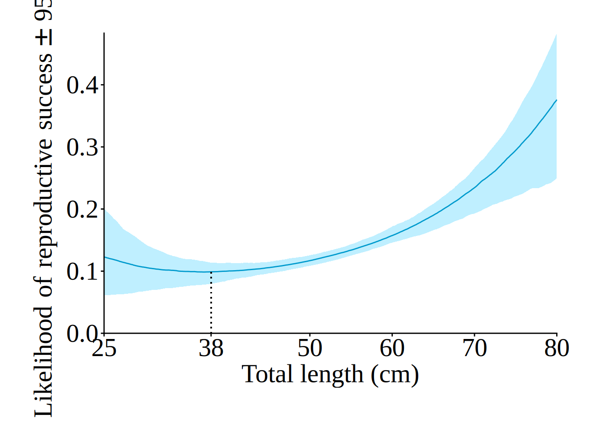
1.5 Figure 2
Fig2 = ggarrange(Fig2a, R, labels = c("(a)", "(b)"), align = "h", nrow = 1, ncol=2, font.label=list(size = 22, face = "italic", family = "Times New Roman"))Warning in grid.Call(C_stringMetric, as.graphicsAnnot(x$label)): font family
'Times New Roman' not found in PostScript font database
Warning in grid.Call(C_stringMetric, as.graphicsAnnot(x$label)): font family
'Times New Roman' not found in PostScript font database
Warning in grid.Call(C_stringMetric, as.graphicsAnnot(x$label)): font family
'Times New Roman' not found in PostScript font database
Warning in grid.Call(C_stringMetric, as.graphicsAnnot(x$label)): font family
'Times New Roman' not found in PostScript font database
Warning in grid.Call(C_stringMetric, as.graphicsAnnot(x$label)): font family
'Times New Roman' not found in PostScript font database
Warning in grid.Call(C_stringMetric, as.graphicsAnnot(x$label)): font family
'Times New Roman' not found in PostScript font database
Warning in grid.Call(C_stringMetric, as.graphicsAnnot(x$label)): font family
'Times New Roman' not found in PostScript font database
Warning in grid.Call(C_stringMetric, as.graphicsAnnot(x$label)): font family
'Times New Roman' not found in PostScript font database
Warning in grid.Call(C_stringMetric, as.graphicsAnnot(x$label)): font family
'Times New Roman' not found in PostScript font database
Warning in grid.Call(C_stringMetric, as.graphicsAnnot(x$label)): font family
'Times New Roman' not found in PostScript font database
Warning in grid.Call(C_stringMetric, as.graphicsAnnot(x$label)): font family
'Times New Roman' not found in PostScript font database
Warning in grid.Call(C_stringMetric, as.graphicsAnnot(x$label)): font family
'Times New Roman' not found in PostScript font database
Warning in grid.Call(C_stringMetric, as.graphicsAnnot(x$label)): font family
'Times New Roman' not found in PostScript font database
Warning in grid.Call(C_stringMetric, as.graphicsAnnot(x$label)): font family
'Times New Roman' not found in PostScript font databaseWarning in grid.Call(C_textBounds, as.graphicsAnnot(x$label), x$x, x$y, : font
family 'Times New Roman' not found in PostScript font database
Warning in grid.Call(C_textBounds, as.graphicsAnnot(x$label), x$x, x$y, : font
family 'Times New Roman' not found in PostScript font database
Warning in grid.Call(C_textBounds, as.graphicsAnnot(x$label), x$x, x$y, : font
family 'Times New Roman' not found in PostScript font database
Warning in grid.Call(C_textBounds, as.graphicsAnnot(x$label), x$x, x$y, : font
family 'Times New Roman' not found in PostScript font database
Warning in grid.Call(C_textBounds, as.graphicsAnnot(x$label), x$x, x$y, : font
family 'Times New Roman' not found in PostScript font database
Warning in grid.Call(C_textBounds, as.graphicsAnnot(x$label), x$x, x$y, : font
family 'Times New Roman' not found in PostScript font database
Warning in grid.Call(C_textBounds, as.graphicsAnnot(x$label), x$x, x$y, : font
family 'Times New Roman' not found in PostScript font database
Warning in grid.Call(C_textBounds, as.graphicsAnnot(x$label), x$x, x$y, : font
family 'Times New Roman' not found in PostScript font database
Warning in grid.Call(C_textBounds, as.graphicsAnnot(x$label), x$x, x$y, : font
family 'Times New Roman' not found in PostScript font database
Warning in grid.Call(C_textBounds, as.graphicsAnnot(x$label), x$x, x$y, : font
family 'Times New Roman' not found in PostScript font database
Warning in grid.Call(C_textBounds, as.graphicsAnnot(x$label), x$x, x$y, : font
family 'Times New Roman' not found in PostScript font database
Warning in grid.Call(C_textBounds, as.graphicsAnnot(x$label), x$x, x$y, : font
family 'Times New Roman' not found in PostScript font database
Warning in grid.Call(C_textBounds, as.graphicsAnnot(x$label), x$x, x$y, : font
family 'Times New Roman' not found in PostScript font database
Warning in grid.Call(C_textBounds, as.graphicsAnnot(x$label), x$x, x$y, : font
family 'Times New Roman' not found in PostScript font database
Warning in grid.Call(C_textBounds, as.graphicsAnnot(x$label), x$x, x$y, : font
family 'Times New Roman' not found in PostScript font database
Warning in grid.Call(C_textBounds, as.graphicsAnnot(x$label), x$x, x$y, : font
family 'Times New Roman' not found in PostScript font databaseWarning in grid.Call(C_stringMetric, as.graphicsAnnot(x$label)): font family
'Times New Roman' not found in PostScript font database
Warning in grid.Call(C_stringMetric, as.graphicsAnnot(x$label)): font family
'Times New Roman' not found in PostScript font database
Warning in grid.Call(C_stringMetric, as.graphicsAnnot(x$label)): font family
'Times New Roman' not found in PostScript font database
Warning in grid.Call(C_stringMetric, as.graphicsAnnot(x$label)): font family
'Times New Roman' not found in PostScript font database
Warning in grid.Call(C_stringMetric, as.graphicsAnnot(x$label)): font family
'Times New Roman' not found in PostScript font database
Warning in grid.Call(C_stringMetric, as.graphicsAnnot(x$label)): font family
'Times New Roman' not found in PostScript font database
Warning in grid.Call(C_stringMetric, as.graphicsAnnot(x$label)): font family
'Times New Roman' not found in PostScript font database
Warning in grid.Call(C_stringMetric, as.graphicsAnnot(x$label)): font family
'Times New Roman' not found in PostScript font database
Warning in grid.Call(C_stringMetric, as.graphicsAnnot(x$label)): font family
'Times New Roman' not found in PostScript font database
Warning in grid.Call(C_stringMetric, as.graphicsAnnot(x$label)): font family
'Times New Roman' not found in PostScript font database
Warning in grid.Call(C_stringMetric, as.graphicsAnnot(x$label)): font family
'Times New Roman' not found in PostScript font database
Warning in grid.Call(C_stringMetric, as.graphicsAnnot(x$label)): font family
'Times New Roman' not found in PostScript font database
Warning in grid.Call(C_stringMetric, as.graphicsAnnot(x$label)): font family
'Times New Roman' not found in PostScript font database
Warning in grid.Call(C_stringMetric, as.graphicsAnnot(x$label)): font family
'Times New Roman' not found in PostScript font databaseWarning in grid.Call(C_textBounds, as.graphicsAnnot(x$label), x$x, x$y, : font
family 'Times New Roman' not found in PostScript font database
Warning in grid.Call(C_textBounds, as.graphicsAnnot(x$label), x$x, x$y, : font
family 'Times New Roman' not found in PostScript font database
Warning in grid.Call(C_textBounds, as.graphicsAnnot(x$label), x$x, x$y, : font
family 'Times New Roman' not found in PostScript font database
Warning in grid.Call(C_textBounds, as.graphicsAnnot(x$label), x$x, x$y, : font
family 'Times New Roman' not found in PostScript font databaseWarning in geom_segment(aes(x = 38, y = 0, xend = 38, yend = R.success.ratio %>% : All aesthetics have length 1, but the data has 551 rows.
ℹ Please consider using `annotate()` or provide this layer with data containing
a single row.Warning in grid.Call(C_textBounds, as.graphicsAnnot(x$label), x$x, x$y, : font
family 'Times New Roman' not found in PostScript font database
Warning in grid.Call(C_textBounds, as.graphicsAnnot(x$label), x$x, x$y, : font
family 'Times New Roman' not found in PostScript font database
Warning in grid.Call(C_textBounds, as.graphicsAnnot(x$label), x$x, x$y, : font
family 'Times New Roman' not found in PostScript font database
Warning in grid.Call(C_textBounds, as.graphicsAnnot(x$label), x$x, x$y, : font
family 'Times New Roman' not found in PostScript font database
Warning in grid.Call(C_textBounds, as.graphicsAnnot(x$label), x$x, x$y, : font
family 'Times New Roman' not found in PostScript font database
Warning in grid.Call(C_textBounds, as.graphicsAnnot(x$label), x$x, x$y, : font
family 'Times New Roman' not found in PostScript font database
Warning in grid.Call(C_textBounds, as.graphicsAnnot(x$label), x$x, x$y, : font
family 'Times New Roman' not found in PostScript font database
Warning in grid.Call(C_textBounds, as.graphicsAnnot(x$label), x$x, x$y, : font
family 'Times New Roman' not found in PostScript font database
Warning in grid.Call(C_textBounds, as.graphicsAnnot(x$label), x$x, x$y, : font
family 'Times New Roman' not found in PostScript font database
Warning in grid.Call(C_textBounds, as.graphicsAnnot(x$label), x$x, x$y, : font
family 'Times New Roman' not found in PostScript font database
Warning in grid.Call(C_textBounds, as.graphicsAnnot(x$label), x$x, x$y, : font
family 'Times New Roman' not found in PostScript font database
Warning in grid.Call(C_textBounds, as.graphicsAnnot(x$label), x$x, x$y, : font
family 'Times New Roman' not found in PostScript font databaseFig2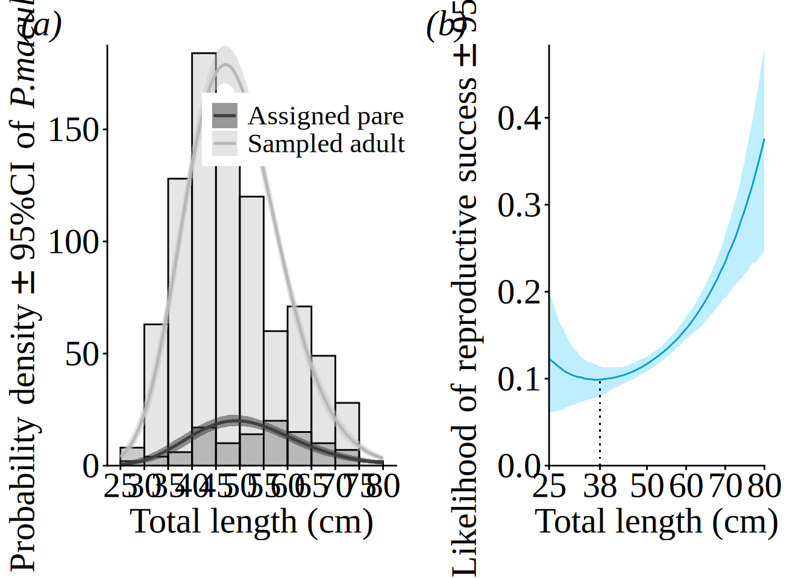
1.6 Calculating the likely reproductive success of above MSL-sized fish (>38 cm TL) versus fish below the MSL (<=38)
bind_rows(
R.success.ratio %>% filter(range <= 38 ) %>% mutate(c025 = cumsum(`2.5%`), c500 = cumsum(`50%`), c975 = cumsum(`97.5%`)) %>%
filter(range == 38) %>% dplyr::select(range, c025, c500, c975),
R.success.ratio %>% filter(range > 38) %>% mutate(c025 = cumsum(`2.5%`), c500 = cumsum(`50%`), c975 = cumsum(`97.5%`)) %>%
filter(range == 80) %>% dplyr::select(range, c025, c500, c975)) %>%
gather(key = key, value = value, -range) %>% spread(key = range, value = value) %>%
rename(NYMFs = `38`, BOFFFs = `80`) %>%
mutate(r = BOFFFs / NYMFs ) key NYMFs BOFFFs r
1 c025 9.19202 62.71257 6.822502
2 c500 13.88176 75.30618 5.424830
3 c975 18.62309 85.76075 4.6050771.7 From this relationship, we estimate the likely reproductive success of fish above the MSL (38 cm TL) is 5.4 times greater than that of NYMFs (95% CI [4.6, 6.8]).
c.ratio = R.success %>% dplyr::select(range, quantile, corrected.ratio) %>%
spread(key = quantile, value = corrected.ratio)
R.contributions = ggplot(c.ratio, aes(x = range, y = `50%`)) +
geom_ribbon(aes(ymin = `2.5%`, ymax = `97.5%`), fill="deepskyblue1", alpha = .25) +
geom_line(col="deepskyblue3") +
geom_segment(aes(x = 38, y = 0, xend = 38, yend = c.ratio %>% filter(range == 38.0) %>% pull(`50%`)), lty = "dotted") +
scale_x_continuous(expand= c(0,0), breaks = c(25, 38, 50, 60, 70, 80)) +
scale_y_continuous(expand= c(0,0)) +
labs(y=expression(Local~replenishment~contribution %+-% `95%CI`), x= "Total length (cm)") +
theme_classic() +
theme(axis.title.y = element_text(size=22)) +
theme(axis.text.y = element_text(size=22)) +
theme(axis.title.x = element_text(size=22)) +
theme(axis.text.x = element_text(size=22)) +
theme(text = element_text(family = "Times New Roman")) +
theme(plot.margin = margin(1, 1, 1, 1,"cm")) +
coord_cartesian(clip = "off")
R.contributionsWarning in geom_segment(aes(x = 38, y = 0, xend = 38, yend = c.ratio %>% : All aesthetics have length 1, but the data has 551 rows.
ℹ Please consider using `annotate()` or provide this layer with data containing
a single row.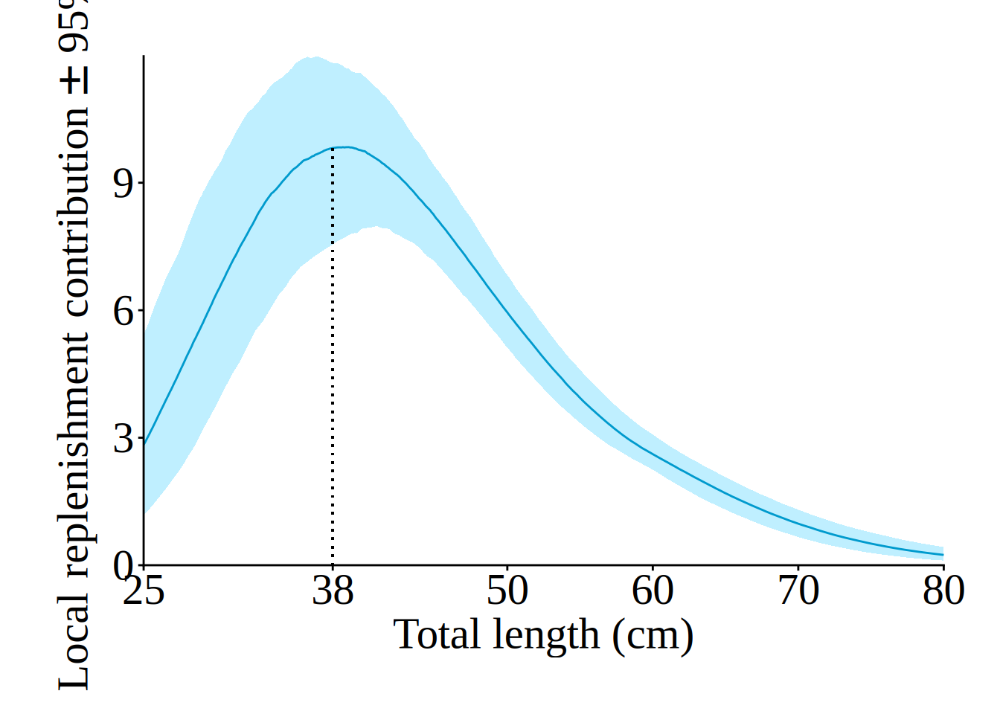
1.8 Calculating the length that displays the highest replenishment contribution
c.ratio %>% filter(`2.5%` == max(`2.5%`)) range 2.5% 50% 97.5%
1 41 7.98126 9.565308 11.23063c.ratio %>% filter(`50%` == max(`50%`)) range 2.5% 50% 97.5%
1 39.1 7.76972 9.837946 11.68465c.ratio %>% filter(`97.5%` == max(`97.5%`)) range 2.5% 50% 97.5%
1 36.9 7.307606 9.670182 11.977571.9 peak 39.1 (95% CI [36.9, 41])
1.10 Contribution of NYMFFs to local replenishment
c.ratio %>% mutate(c025 = cumsum(`2.5%`) / sum(`2.5%`), c500 = cumsum(`50%`) / sum(`50%`), c975 = cumsum(`97.5%`) / sum(`97.5%`)) %>% filter(range == 38) range 2.5% 50% 97.5% c025 c500 c975
1 38 7.541084 9.819008 11.82249 0.3074236 0.3603877 0.3977731.11 NYMFs contribute 36% 95 CI [31,40] of juvenile fish that recruited to the island group
1.12 Contributions of above-MSL fish equal to that of sub-MSL fish
c.ratio %>% mutate(c025 = cumsum(`2.5%`) / sum(`2.5%`), c500 = cumsum(`50%`) / sum(`50%`), c975 = cumsum(`97.5%`) / sum(`97.5%`)) %>% filter(range == 38 | range == 49) range 2.5% 50% 97.5% c025 c500 c975
1 38 7.541084 9.819008 11.822491 0.3074236 0.3603877 0.3977730
2 49 5.539353 6.399491 7.341405 0.7119074 0.7293088 0.74056091.13 Figure 3
ntmr.plot = ggplot(ntmr.zones[[1]] %>% spread(key = quantile, value = value),
aes(y = `50%`, x = range)) +
geom_histogram(data = data.frame(x = ntmr$TOTAL.LENGTH), aes(x = x, y=..density..), binwidth=5, boundary=5, colour="black", fill="grey66", alpha = .3) +
geom_ribbon(aes(ymin = `2.5%`, ymax = `97.5%`), fill = "grey78", alpha = .5) +
geom_line(col = "grey66") +
scale_y_continuous(expand = c(0,0)) +
scale_x_continuous(breaks = seq(0,80,5),limits=c(0,80), labels=c("0", "", "10", "", "20", "", "30", "", "40", "", "50", "", "60", "", "70", "", "80")) +
labs(y=expression(Probability~density %+-% `95%CI`), x="Total length (cm)") +
theme_classic() +
theme(axis.title.y = element_text(size=22)) +
theme(axis.text.y = element_text(size=22)) +
theme(axis.title.x = element_text(size=22)) +
theme(axis.text.x = element_text(size=22)) +
theme(text = element_text(family = "Times New Roman"))
ntmr.plotWarning: The dot-dot notation (`..density..`) was deprecated in ggplot2 3.4.0.
ℹ Please use `after_stat(density)` instead.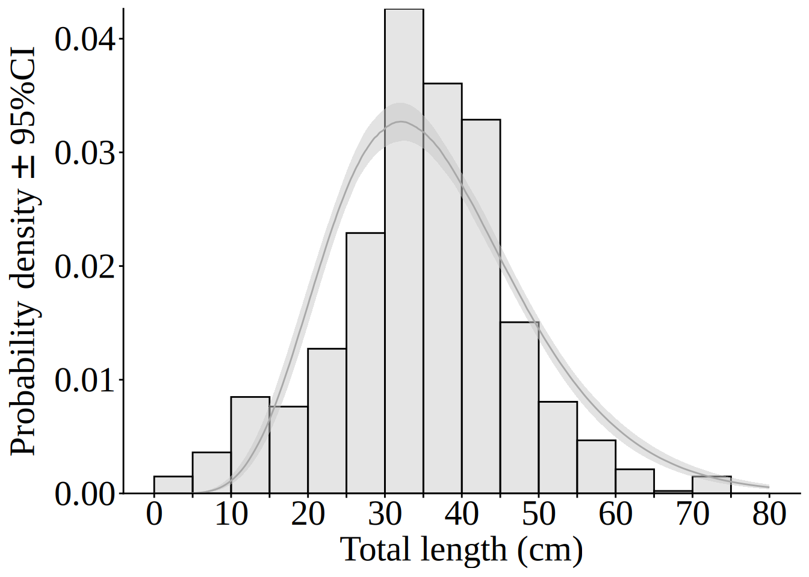
Fig3 = ggarrange(ntmr.plot, R.contributions, labels = c("(a)", "(b)"), align = "h", nrow=1, ncol = 2, widths = c(1,1.2), font.label=list(size = 22, face = "italic", family = "Times New Roman"))Warning in grid.Call(C_textBounds, as.graphicsAnnot(x$label), x$x, x$y, : font
family 'Times New Roman' not found in PostScript font databaseWarning in grid.Call(C_textBounds, as.graphicsAnnot(x$label), x$x, x$y, : font
family 'Times New Roman' not found in PostScript font database
Warning in grid.Call(C_textBounds, as.graphicsAnnot(x$label), x$x, x$y, : font
family 'Times New Roman' not found in PostScript font database
Warning in grid.Call(C_textBounds, as.graphicsAnnot(x$label), x$x, x$y, : font
family 'Times New Roman' not found in PostScript font database
Warning in grid.Call(C_textBounds, as.graphicsAnnot(x$label), x$x, x$y, : font
family 'Times New Roman' not found in PostScript font database
Warning in grid.Call(C_textBounds, as.graphicsAnnot(x$label), x$x, x$y, : font
family 'Times New Roman' not found in PostScript font database
Warning in grid.Call(C_textBounds, as.graphicsAnnot(x$label), x$x, x$y, : font
family 'Times New Roman' not found in PostScript font database
Warning in grid.Call(C_textBounds, as.graphicsAnnot(x$label), x$x, x$y, : font
family 'Times New Roman' not found in PostScript font database
Warning in grid.Call(C_textBounds, as.graphicsAnnot(x$label), x$x, x$y, : font
family 'Times New Roman' not found in PostScript font database
Warning in grid.Call(C_textBounds, as.graphicsAnnot(x$label), x$x, x$y, : font
family 'Times New Roman' not found in PostScript font database
Warning in grid.Call(C_textBounds, as.graphicsAnnot(x$label), x$x, x$y, : font
family 'Times New Roman' not found in PostScript font database
Warning in grid.Call(C_textBounds, as.graphicsAnnot(x$label), x$x, x$y, : font
family 'Times New Roman' not found in PostScript font database
Warning in grid.Call(C_textBounds, as.graphicsAnnot(x$label), x$x, x$y, : font
family 'Times New Roman' not found in PostScript font database
Warning in grid.Call(C_textBounds, as.graphicsAnnot(x$label), x$x, x$y, : font
family 'Times New Roman' not found in PostScript font database
Warning in grid.Call(C_textBounds, as.graphicsAnnot(x$label), x$x, x$y, : font
family 'Times New Roman' not found in PostScript font databaseWarning in geom_segment(aes(x = 38, y = 0, xend = 38, yend = c.ratio %>% : All aesthetics have length 1, but the data has 551 rows.
ℹ Please consider using `annotate()` or provide this layer with data containing
a single row.Warning in grid.Call(C_textBounds, as.graphicsAnnot(x$label), x$x, x$y, : font
family 'Times New Roman' not found in PostScript font database
Warning in grid.Call(C_textBounds, as.graphicsAnnot(x$label), x$x, x$y, : font
family 'Times New Roman' not found in PostScript font database
Warning in grid.Call(C_textBounds, as.graphicsAnnot(x$label), x$x, x$y, : font
family 'Times New Roman' not found in PostScript font database
Warning in grid.Call(C_textBounds, as.graphicsAnnot(x$label), x$x, x$y, : font
family 'Times New Roman' not found in PostScript font database
Warning in grid.Call(C_textBounds, as.graphicsAnnot(x$label), x$x, x$y, : font
family 'Times New Roman' not found in PostScript font database
Warning in grid.Call(C_textBounds, as.graphicsAnnot(x$label), x$x, x$y, : font
family 'Times New Roman' not found in PostScript font database
Warning in grid.Call(C_textBounds, as.graphicsAnnot(x$label), x$x, x$y, : font
family 'Times New Roman' not found in PostScript font database
Warning in grid.Call(C_textBounds, as.graphicsAnnot(x$label), x$x, x$y, : font
family 'Times New Roman' not found in PostScript font database
Warning in grid.Call(C_textBounds, as.graphicsAnnot(x$label), x$x, x$y, : font
family 'Times New Roman' not found in PostScript font database
Warning in grid.Call(C_textBounds, as.graphicsAnnot(x$label), x$x, x$y, : font
family 'Times New Roman' not found in PostScript font database
Warning in grid.Call(C_textBounds, as.graphicsAnnot(x$label), x$x, x$y, : font
family 'Times New Roman' not found in PostScript font databaseFig3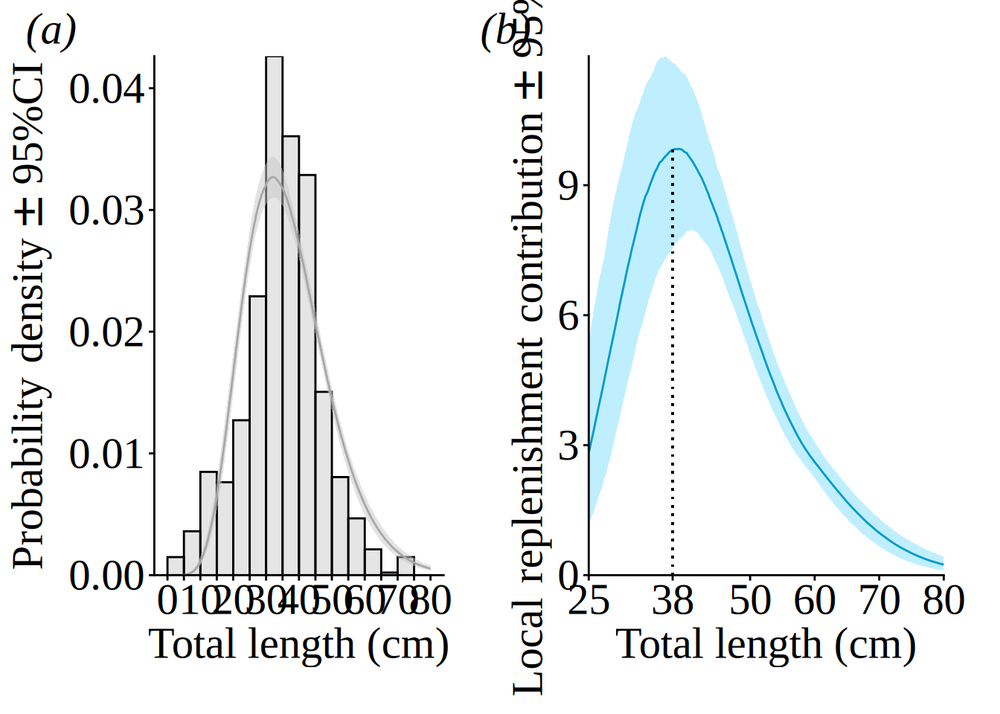
2 Supplementary Figure
2.1 S1
FigS1 = ggplot(parent_size %>% dplyr::select(REEF, Parent_sample_TL_cm, Parent_spawning_TL_cm) %>%
gather(key = key, value = value, -REEF), aes(x = value, fill = key)) +
geom_histogram(position = "dodge", binwidth = 5, boundary=5) +
scale_x_continuous(breaks = seq(25,80,5), limits=c(25,80)) +
scale_y_continuous(expand = c(0,0)) +
labs(y = expression(`#`~italic("P. maculatus")), x = "Total Length (cm)") +
scale_fill_manual(values = c("grey78", "grey28"), labels=c("Length at sampling", "Length at spawning")) +
theme_classic() + theme(legend.position = c(.9,.94), legend.title = element_blank()) +
theme(text = element_text(family = "Times New Roman")) +
theme(legend.text = element_text(size=17)) +
theme(axis.title.y = element_text(size=22)) +
theme(axis.text.y = element_text(size=26)) +
theme(axis.title.x = element_text(size=24)) +
theme(axis.text.x = element_text(size=22))
FigS1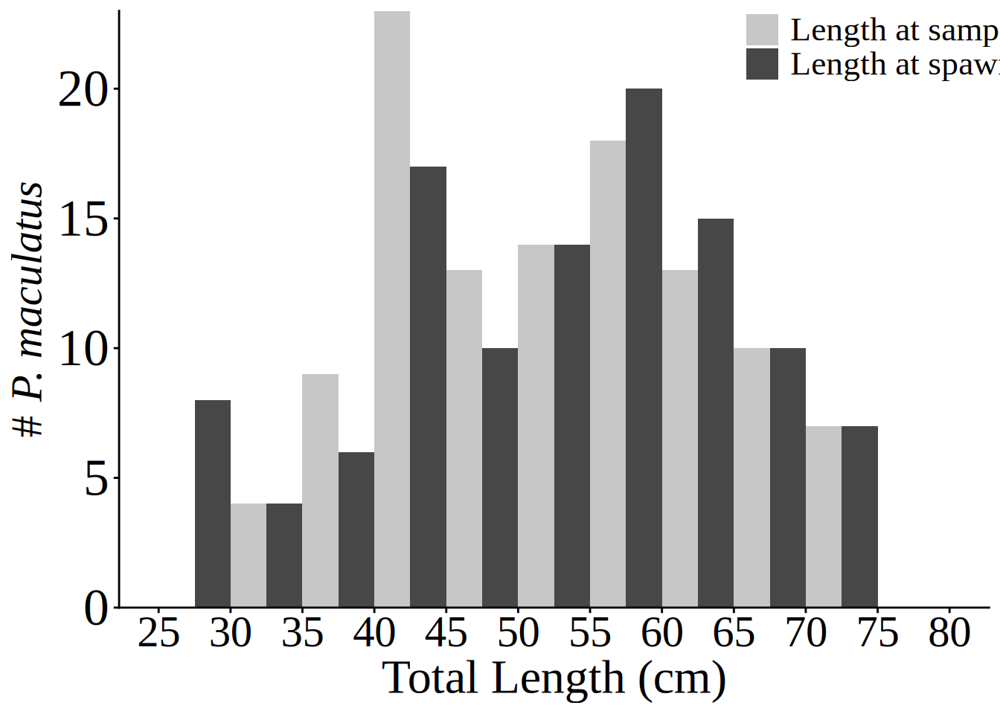
2.2 S2
Figure_S2=ggarrange(sample.gamma[[3]] + labs(title = "Sampled adults", font.label=list(size = 22, family = "Times New Roman")) + scale_x_continuous(breaks = seq(25,80,5), limits=c(25,80)) +
scale_y_continuous(expand = c(0,0)) +
theme(text = element_text(family = "Times New Roman")) +
theme(axis.title.y = element_text(size=22)) +
theme(axis.text.y = element_text(size=22)) +
theme(axis.title.x = element_text(size=22)) +
theme(axis.text.x = element_text(size=18)),
assign.gamma[[3]] + labs(title = "Assigned parents", font.label=list(size = 22, family = "Times New Roman")) + scale_x_continuous(breaks = seq(25,80,5), limits=c(25,80)) +
scale_y_continuous(expand = c(0,0)) +
theme(text = element_text(family = "Times New Roman")) +
theme(axis.title.y = element_text(size=22)) +
theme(axis.text.y = element_text(size=22)) +
theme(axis.title.x = element_text(size=22)) +
theme(axis.text.x = element_text(size=18)) +
rremove("y.title"),
labels = c("(a)", "(b)"), align = "h", nrow = 1, ncol = 2, font.label=list(size = 20, face = "italic", family = "Times New Roman"))Scale for x is already present.
Adding another scale for x, which will replace the existing scale.
Scale for y is already present.
Adding another scale for y, which will replace the existing scale.
Scale for x is already present.
Adding another scale for x, which will replace the existing scale.
Scale for y is already present.
Adding another scale for y, which will replace the existing scale.
Ignoring unknown labels:
• font.label : "list(size = 22, family = \"Times New Roman\")"Warning in grid.Call(C_stringMetric, as.graphicsAnnot(x$label)): font family
'Times New Roman' not found in PostScript font database
Warning in grid.Call(C_stringMetric, as.graphicsAnnot(x$label)): font family
'Times New Roman' not found in PostScript font database
Warning in grid.Call(C_stringMetric, as.graphicsAnnot(x$label)): font family
'Times New Roman' not found in PostScript font database
Warning in grid.Call(C_stringMetric, as.graphicsAnnot(x$label)): font family
'Times New Roman' not found in PostScript font database
Warning in grid.Call(C_stringMetric, as.graphicsAnnot(x$label)): font family
'Times New Roman' not found in PostScript font database
Warning in grid.Call(C_stringMetric, as.graphicsAnnot(x$label)): font family
'Times New Roman' not found in PostScript font database
Warning in grid.Call(C_stringMetric, as.graphicsAnnot(x$label)): font family
'Times New Roman' not found in PostScript font database
Warning in grid.Call(C_stringMetric, as.graphicsAnnot(x$label)): font family
'Times New Roman' not found in PostScript font database
Warning in grid.Call(C_stringMetric, as.graphicsAnnot(x$label)): font family
'Times New Roman' not found in PostScript font database
Warning in grid.Call(C_stringMetric, as.graphicsAnnot(x$label)): font family
'Times New Roman' not found in PostScript font database
Warning in grid.Call(C_stringMetric, as.graphicsAnnot(x$label)): font family
'Times New Roman' not found in PostScript font database
Warning in grid.Call(C_stringMetric, as.graphicsAnnot(x$label)): font family
'Times New Roman' not found in PostScript font database
Warning in grid.Call(C_stringMetric, as.graphicsAnnot(x$label)): font family
'Times New Roman' not found in PostScript font database
Warning in grid.Call(C_stringMetric, as.graphicsAnnot(x$label)): font family
'Times New Roman' not found in PostScript font databaseWarning in grid.Call(C_textBounds, as.graphicsAnnot(x$label), x$x, x$y, : font
family 'Times New Roman' not found in PostScript font database
Warning in grid.Call(C_textBounds, as.graphicsAnnot(x$label), x$x, x$y, : font
family 'Times New Roman' not found in PostScript font database
Warning in grid.Call(C_textBounds, as.graphicsAnnot(x$label), x$x, x$y, : font
family 'Times New Roman' not found in PostScript font database
Warning in grid.Call(C_textBounds, as.graphicsAnnot(x$label), x$x, x$y, : font
family 'Times New Roman' not found in PostScript font database
Warning in grid.Call(C_textBounds, as.graphicsAnnot(x$label), x$x, x$y, : font
family 'Times New Roman' not found in PostScript font database
Warning in grid.Call(C_textBounds, as.graphicsAnnot(x$label), x$x, x$y, : font
family 'Times New Roman' not found in PostScript font database
Warning in grid.Call(C_textBounds, as.graphicsAnnot(x$label), x$x, x$y, : font
family 'Times New Roman' not found in PostScript font database
Warning in grid.Call(C_textBounds, as.graphicsAnnot(x$label), x$x, x$y, : font
family 'Times New Roman' not found in PostScript font database
Warning in grid.Call(C_textBounds, as.graphicsAnnot(x$label), x$x, x$y, : font
family 'Times New Roman' not found in PostScript font database
Warning in grid.Call(C_textBounds, as.graphicsAnnot(x$label), x$x, x$y, : font
family 'Times New Roman' not found in PostScript font database
Warning in grid.Call(C_textBounds, as.graphicsAnnot(x$label), x$x, x$y, : font
family 'Times New Roman' not found in PostScript font database
Warning in grid.Call(C_textBounds, as.graphicsAnnot(x$label), x$x, x$y, : font
family 'Times New Roman' not found in PostScript font database
Warning in grid.Call(C_textBounds, as.graphicsAnnot(x$label), x$x, x$y, : font
family 'Times New Roman' not found in PostScript font database
Warning in grid.Call(C_textBounds, as.graphicsAnnot(x$label), x$x, x$y, : font
family 'Times New Roman' not found in PostScript font database
Warning in grid.Call(C_textBounds, as.graphicsAnnot(x$label), x$x, x$y, : font
family 'Times New Roman' not found in PostScript font database
Warning in grid.Call(C_textBounds, as.graphicsAnnot(x$label), x$x, x$y, : font
family 'Times New Roman' not found in PostScript font database
Warning in grid.Call(C_textBounds, as.graphicsAnnot(x$label), x$x, x$y, : font
family 'Times New Roman' not found in PostScript font database
Warning in grid.Call(C_textBounds, as.graphicsAnnot(x$label), x$x, x$y, : font
family 'Times New Roman' not found in PostScript font databaseWarning in grid.Call(C_stringMetric, as.graphicsAnnot(x$label)): font family
'Times New Roman' not found in PostScript font database
Warning in grid.Call(C_stringMetric, as.graphicsAnnot(x$label)): font family
'Times New Roman' not found in PostScript font database
Warning in grid.Call(C_stringMetric, as.graphicsAnnot(x$label)): font family
'Times New Roman' not found in PostScript font database
Warning in grid.Call(C_stringMetric, as.graphicsAnnot(x$label)): font family
'Times New Roman' not found in PostScript font database
Warning in grid.Call(C_stringMetric, as.graphicsAnnot(x$label)): font family
'Times New Roman' not found in PostScript font database
Warning in grid.Call(C_stringMetric, as.graphicsAnnot(x$label)): font family
'Times New Roman' not found in PostScript font database
Warning in grid.Call(C_stringMetric, as.graphicsAnnot(x$label)): font family
'Times New Roman' not found in PostScript font database
Warning in grid.Call(C_stringMetric, as.graphicsAnnot(x$label)): font family
'Times New Roman' not found in PostScript font database
Warning in grid.Call(C_stringMetric, as.graphicsAnnot(x$label)): font family
'Times New Roman' not found in PostScript font database
Warning in grid.Call(C_stringMetric, as.graphicsAnnot(x$label)): font family
'Times New Roman' not found in PostScript font database
Warning in grid.Call(C_stringMetric, as.graphicsAnnot(x$label)): font family
'Times New Roman' not found in PostScript font database
Warning in grid.Call(C_stringMetric, as.graphicsAnnot(x$label)): font family
'Times New Roman' not found in PostScript font database
Warning in grid.Call(C_stringMetric, as.graphicsAnnot(x$label)): font family
'Times New Roman' not found in PostScript font database
Warning in grid.Call(C_stringMetric, as.graphicsAnnot(x$label)): font family
'Times New Roman' not found in PostScript font databaseIgnoring unknown labels:
• font.label : "list(size = 22, family = \"Times New Roman\")"Warning in grid.Call(C_textBounds, as.graphicsAnnot(x$label), x$x, x$y, : font
family 'Times New Roman' not found in PostScript font databaseWarning in grid.Call(C_textBounds, as.graphicsAnnot(x$label), x$x, x$y, : font
family 'Times New Roman' not found in PostScript font database
Warning in grid.Call(C_textBounds, as.graphicsAnnot(x$label), x$x, x$y, : font
family 'Times New Roman' not found in PostScript font database
Warning in grid.Call(C_textBounds, as.graphicsAnnot(x$label), x$x, x$y, : font
family 'Times New Roman' not found in PostScript font database
Warning in grid.Call(C_textBounds, as.graphicsAnnot(x$label), x$x, x$y, : font
family 'Times New Roman' not found in PostScript font database
Warning in grid.Call(C_textBounds, as.graphicsAnnot(x$label), x$x, x$y, : font
family 'Times New Roman' not found in PostScript font database
Warning in grid.Call(C_textBounds, as.graphicsAnnot(x$label), x$x, x$y, : font
family 'Times New Roman' not found in PostScript font database
Warning in grid.Call(C_textBounds, as.graphicsAnnot(x$label), x$x, x$y, : font
family 'Times New Roman' not found in PostScript font database
Warning in grid.Call(C_textBounds, as.graphicsAnnot(x$label), x$x, x$y, : font
family 'Times New Roman' not found in PostScript font database
Warning in grid.Call(C_textBounds, as.graphicsAnnot(x$label), x$x, x$y, : font
family 'Times New Roman' not found in PostScript font database
Warning in grid.Call(C_textBounds, as.graphicsAnnot(x$label), x$x, x$y, : font
family 'Times New Roman' not found in PostScript font database
Warning in grid.Call(C_textBounds, as.graphicsAnnot(x$label), x$x, x$y, : font
family 'Times New Roman' not found in PostScript font database
Warning in grid.Call(C_textBounds, as.graphicsAnnot(x$label), x$x, x$y, : font
family 'Times New Roman' not found in PostScript font database
Warning in grid.Call(C_textBounds, as.graphicsAnnot(x$label), x$x, x$y, : font
family 'Times New Roman' not found in PostScript font database
Warning in grid.Call(C_textBounds, as.graphicsAnnot(x$label), x$x, x$y, : font
family 'Times New Roman' not found in PostScript font database
Warning in grid.Call(C_textBounds, as.graphicsAnnot(x$label), x$x, x$y, : font
family 'Times New Roman' not found in PostScript font database
Warning in grid.Call(C_textBounds, as.graphicsAnnot(x$label), x$x, x$y, : font
family 'Times New Roman' not found in PostScript font database
Warning in grid.Call(C_textBounds, as.graphicsAnnot(x$label), x$x, x$y, : font
family 'Times New Roman' not found in PostScript font database
Warning in grid.Call(C_textBounds, as.graphicsAnnot(x$label), x$x, x$y, : font
family 'Times New Roman' not found in PostScript font databaseFigure_S2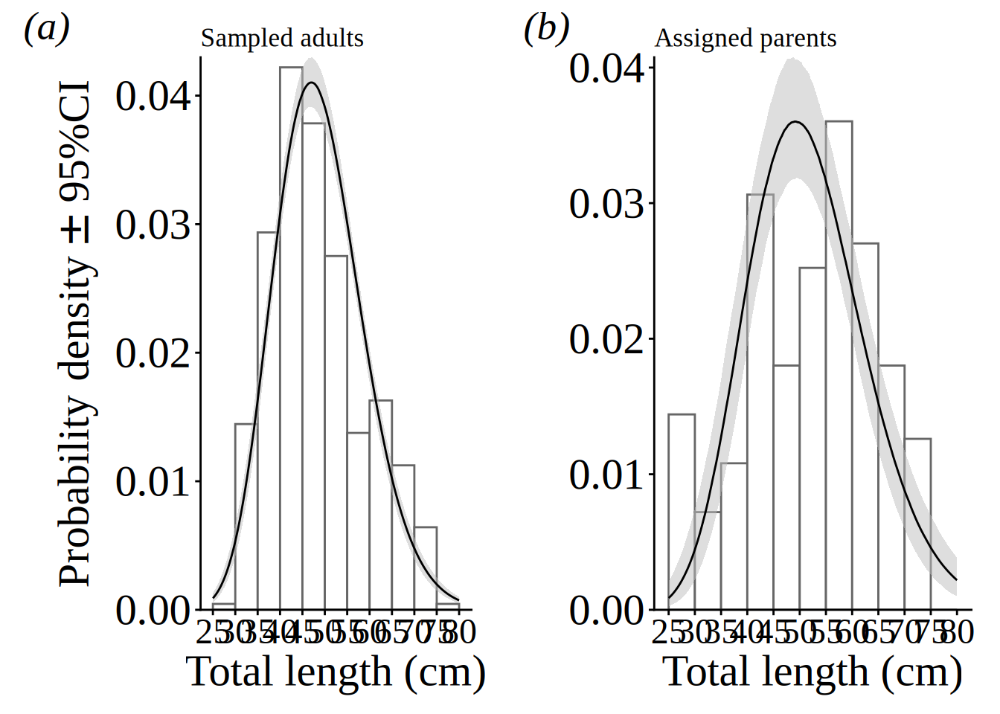